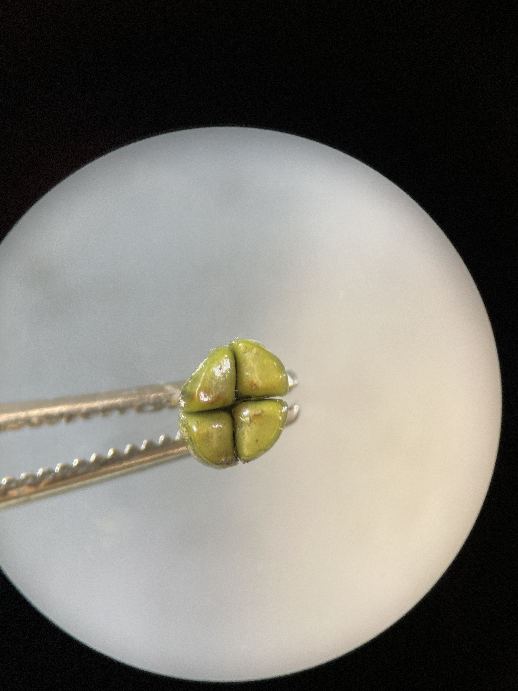
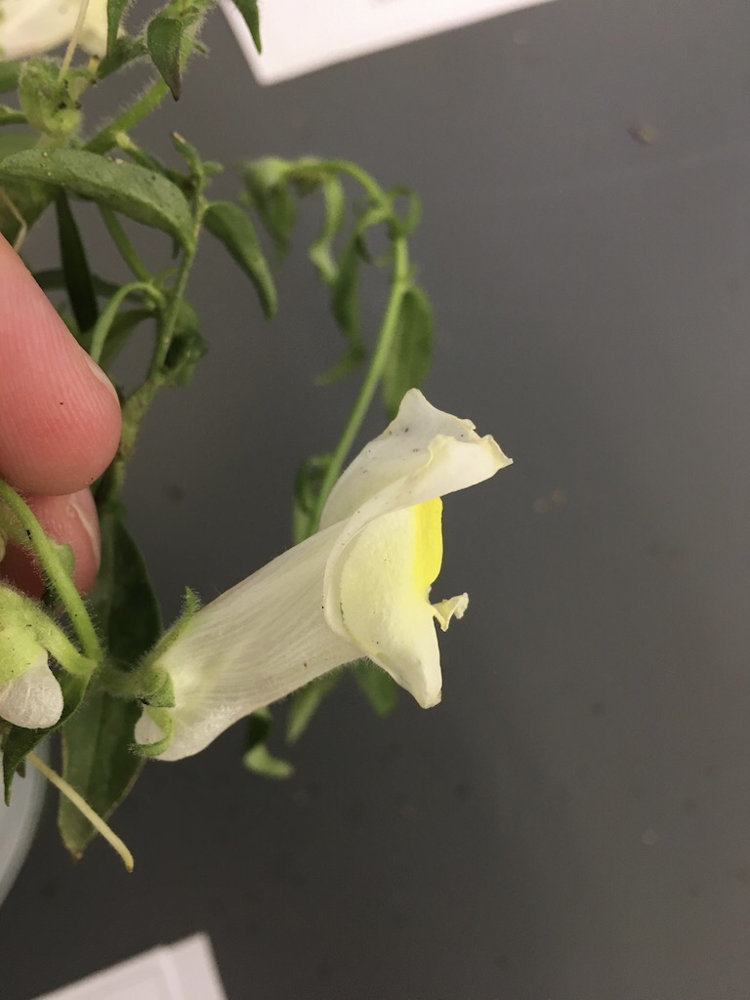
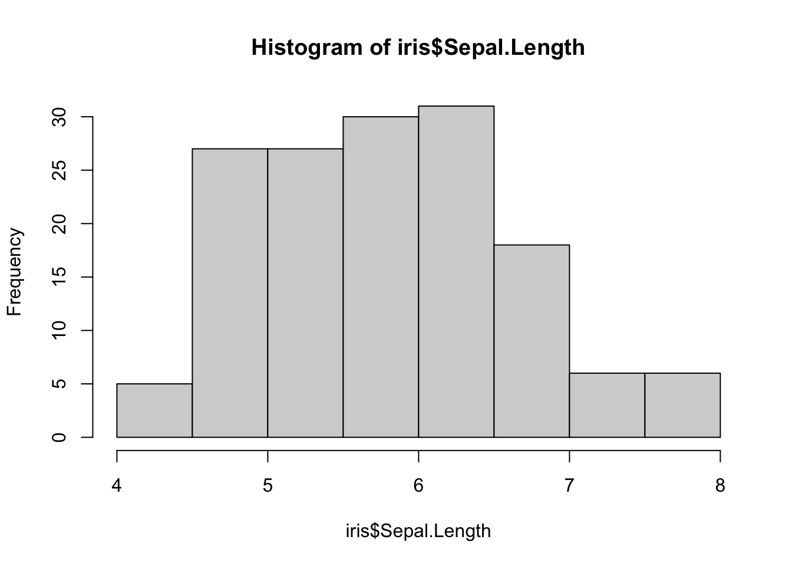

Lab 6: Lamiaceae, Schrophularioids, and Introduction to R
Lamiaceae (Mint family)
1. Herbs with square stems, usually aromatic.
2. Leaves simple, opposite or whorled, without stipules.
3. Flowers perfect, zygomorphic. Sepals 5, fused. Petals 5, fused, bilabiate. Stamens 2 or 4, epipetalous, often didynamous. Pistil compound, ovary superior, carpels 2, but deeply lobed, appearing as 4, placentation basal.
4. Fruit 4 nutlets.
5. About 200 genera, 3200 species, cosmopolitan
Most Lamiaceae contain fragrant oils, and many are used as herbs or flavorings, including Mentha (mint), Salvia (sage), Rosmarinus (rosemary), Thymus (thyme), Marrubium (horehound), Nepeta (catnip), Satureja (savoury), Origanum (oregano), Majorana (sweet marjoram), Ocimum (sweet basil).
Diagrams


Leaves
Members of the Lamiaceae have distinctive vegetative characteristics: square stems and decussate leaves. You can see the square stems quite well in the below pictures of Stachys chamissonis. The picture on the right shows a cross-section of the stem.
The leaves are most often “decussate” in this family (leaves opposite at each node, with each pair of leaves rotated 90° with respect to those above and below). Given this “phyllotaxy”, how would these plants look from above?


Flowers are zygomorphic and bilabiate, with fused sepals and petals. The flowers are quite often arranged in “verticils” (whorls of flowers in cyclical arrangement attached to a central point). Note the flower structure and verticils below in S. chamissonis (left) and Salvia nemorosa (right). Would you describe these flowers as sessile or pedicellate?


Flowers
Many flowers in Lamiaceae and the Scrophularioid families have “galea”, where the upper lip of the corolla is shaped like a hood or helmet. The galea is quite strong in the Salvia (right). Do you remember another family we’ve seen galea in?

Lamiaceae flowers can have 2 or 4 stamens, and when there are 4 they are often didynamous (2 long and 2 short). Members of the genus Salvia have very interesting stamens. They’ve got an expanded connective (tissue between the two anther sacs), separating them to a high and low point that forms a lever-like mechanism. The lower anther sac is infertile (a “dud” anther-sac), and when the pollinator presses on it it brings the upper functional anther sac down onto its body. You can see pictures of the Salvia flower and specialized stamens below.

As mentioned above, many members of Lamiaceae are aromatic and used as culinary herbs (e.g., rosemary, thyme, mint, sage, etc). These delicious flavours and dank smells come from fragrant oils, which are often stored in glandular trichomes. In the close-up of the Stachys calyx below, can you differentiate between glandular and eglandular trichomes?

Fruit
Lamiaceae flowers have superior ovaries, with compound pistils and 2 carpels. While the ovary only has two carpels, each carpel is deeply lobed and breaks in two, eventually developing into 4 “nutlets” that break off individually. What hints that these flowers have 2 carpels instead of 4?
Quite often you will just see a bunch of persistent calyxes, with the nutlets hidden inside. Here you can see a developing fruit:

Here you can a fully developed fruit:

-KNOWLEDGE CHECK 6.1-
Using the above pictures (and your imagination!), make some drawings of a Lamiaceae plant and include the following:
- Square stems and decussate leaves
- Flowers in verticils
- Flower with a fused calyx and bilabiate corolla
- A developed fruit (make sure to label the type)
- Make sure to include the following terms: Calyx, corolla, stamens, style, stigma lobes, ovary, fruit, verticils, stems, node, leaves.
Scrophularioid families
1. Mostly herbs
2. Leaves simple, alternate, or opposite, without stipules.
3. Flowers perfect, zygomorphic. Sepals 5, free or fused. Petals 5, fused, often bilabiate. Stamens 2, 4, or 5, epipetalous, often didynamous, staminode often present. Pistil compound, ovary superior, carpels 2, placentation axile.
4. Fruit a capsule.
5. About 210 genera and 3000 species, cosmopolitan.
The traditionally large and heterogeneous family Scrophulariaceae sensu latissimo has recently been divided into a number of separate families on the basis of molecular phylogenetic studies. Paulownia, always of uncertain placement but often included in the Scrophulariaceae s.l., now is placed in a separate family. For further details see:
Olmsted, R. M., dePamphilis, C. W., Wolfe, A. D., Young, N. D., Elisens, W. J., & Reeves, P. A. 2001. Disintegration of the Scrophulariaceae. American J. Bot. 88: 348-361.
PLANTAGINACEAE Jussieu, nom. cons. (Snapdragon family) Ca 90 genera, 1700 species. Examples: Veronica (ca 450, inc. Hebe, Parahebe, Synthyris, etc.), Penstemon (275), Plantago (275), Litorella, Linaria (150), Bacopa (55), Antirrhinum - snapdragon, Sibthorpia, Collinsia, Digitalis, Hippuris - marestail, Callitriche - water starwort.
PHRYMACEAE Schauer, nom. cons. (Monkeyflower family) Ca 19 genera, 234 species Examples: Erythranthe (formerly Mimulus) (150-170) - monkeyflower, Mazus (30), Phryma, Rehmannia
SCROPHULARIACEAE Jussieu, nom. cons. (Figwort family) 65 genera, 1700 species. Examples: Verbascum (360) - mulleins, Eremophila (210), Scrophularia (200) - figworts, Selago (190), Buddleja (125), Jamesbrittenia (85), Manulea (75), Diascia (70), Nemesia (65)
OROBANCHACEAE Ventenat, nom. cons. (Lousewort family) 99 genera, 2061 species. Parasites or hemiparasites. Examples: Pedicularis (600-800), Castilleja (200), Euphrasia (170-350), Orobanche (150), Buchnera (100), Bartsia (50), Agalinis (45), Rhinanthus (45).
PAULOWNIACEAE Nakai 1 genus, 6 species. Example: Paulownia (foxglove tree).
Diagrams

Flowers
While there can be quite a bit of variation amongst these groups, most members of the Scrophularioid families have fused, tubulur, and bilabiate corollas. Their flowers are often quite showy, as pictured below in Penstemon davidsonii (left) and Erythranthe lewisii (right); both of these plants can be found along subalpine streambanks in the Pacific Northwest.


A more common and widespread example is foxglove (Digitalis purpurea). Like other members of the Scrophularioids, it has 5 sepals and 5 fused petals. Can you see any indication of petal lobes in the picture below?


The stamens are typically “epipetalous”, meaning that the filaments are fused to the petals instead of emerging separately from the receptacle. See the dissected foxglove flower below:

These families exhibit a wide diversity of floral forms, which can make them difficult to identify by sight. For example, Antirrhinum (snapdragons - left) and Linaria (toadflax - right) both have petal spurs. Can you identify the spurs? What other family have we seen spurs in?

Some genera, like the beautiful and dainty Veronica (left) and Euphrasia (right), have small and almost radially symmetric flowers. Why would these still be considered zygomorphic?
The family Orobanchaceae (also originally housed within Scrophulariaceae) has many plants with wild floral structures, like Castilleja (paintbrushes - left) and Pedicularis (louseworts - right). Most of these plants are parasitic on the roots of other plants. Most are “hemiparasitic” (only partially depending on other plants for nutrients), but some (“holoparasites”) are completely parasitic and lack clorophyll entirely. In paintbrushes, most of the vibrantly coloured (in this case red) bits are actually bracts (modified leaves)- can you see which bits might be parts of the perianth? In the Elephant’s head lousewort (Pedicularis groenlandica) displayed on the right, the upper corolla lip is strongly galeate and beaked, resembling the head and trunk of an elephant.


Plantago (one of the only three genera originally in Plantaginaceae) also has weird flowers that are highly reduced and a lot less showy than other Scrophularioids. Plantago lanceolata, a widespread weed pictured below, has a spike (inflorescence) of densely clustered flowers that are quite drab and greenish-brownish. What are the whitish-yellow things poking out of the inflorescence?

Like with all things that seem boring at first, things get a lot more interesting when you use some magnification! Here you can see all those tiny flowers densely clustered together.

Fruit
Carefully removing a Plantago flower shows a developing capsule that dehisces like an Easter egg or Matroyshka doll, revealing the seeds inside. What type of dehiscence is this? Using the photo on the left, can you identify the sepals and petals?.
These families have superior ovaries (2 carpels) that develop into capsules. Below, you can see foxglove capsules at various stages of development (left). Once the fruit is fully developed, the capsule dehisces and releases the seeds (right). What type of dehiscence is displayed here?

-KNOWLEDGE CHECK 6.2-
Using the pictures above, draw a foxglove flower and make sure to include the following:
- Fused, bilabiate corolla
- Epipetalous stamens
- Mature capsule (note the type of dehiscence)
- Include the following terms: corolla, calyx, anther, filament, capsule, seeds
- Write down some of the characters that are consistent across most of the Scrophularioids we’ve shown you. Are there any examples that don’t follow these patterns? How do they differ? Compare and contrast Lamiaceae and Scrophularioid families.
R activity 1: Intro to R, Rstudio, Data Wrangling, and Plotting
Motivation
Data management and analysis is increasingly important in the sciences, and this is particularly true for biology. Data science has transformed plant taxonomy, whether it be for mapping species occurrence records, or using morphometrics to quantify variation in shape among taxa. In previous years, biologists used a combination of spreadsheets (e.g., MS Excel) and statistical software such as JMP or SPSS to conduct their statistical analyses. More recently, many fields have transitioned to using the R programming language for data analysis.
R provides many advantages to traditional programs: R is open-source (free to use, all code is shared freely for users to modify how they wish), reproducible, and powerful. Its open-source nature has led to the creation of thousands of custom packages, providing unprecedented access to advanced statistical analyses for anyone willing to learn. For example, you can now use R to crunch sophisticated genomic data or make highly detailed geographic maps, both of which used to require proprietary software (e.g., CLC workbench, ArcGIS) that cost thousands of dollars to use. Because every analysis done in R is written step-by-step by the user (you!), R ‘scripts’ can be saved, shared, and re-run at any time by anybody. This aspect of R separates it from traditional software platforms because data analysis has become reproducible; this is good for science.
R’s main disadvantage is that it has a steep learning curve. Because R is a programming language, you do most of the heavy lifting by writing code instead of clicking around as with a traditional program. This is quite scary for a lot of folks, your intrepid teaching team included! If you told us at the beginning of our R journeys that we’d be actually teaching R in the future, we would have taken a break from our frustrated crying to laugh in your face! Like with anything challenging and worthwhile in life, the only way to make progress is to push past your fear and start grinding ;-).
One more note before we jump in: this is not a programming class. Our main goal is to provide some exposure to R, and for you to learn and become more comfortable with programming if/when you end up using these tools in the future. We’ll provide the resources needed to learn the basics, and there will be plenty of lab time to work together and tackle the learning curve. Aside from some participation marks (and a few Canvas quiz questions), we will not be evaluating you based on your ability to write R code. Instead, you will be assessed based on your ability to understand and interpret taxonomic concepts and data. And the payoff is worth it: Knowing R can help you land summer research jobs (put it on your CV!), and is increasingly used for teaching in UBC BIOL classes (e.g. BIOL300, BIOL406, BIOL413, BIOL416).
Pre-lab
Before starting this week’s lab you (hopefully) have:
completed the pre-lab reading: Introduction for Students and Chapters 1.1–1.3 from ModernDive—a textbook for learning data science using R. We will work through Chapters 1–4 of this textbook over the semester, and we encourage you to read ahead (through Ch.4) on your own time!
R and RStudio downloaded onto your computer. Chapter 1.1 in ModernDive provides instructions for downloading R and RStudio. If you have trouble with installation, contact the TAs as soon as possible for guidance,
An Introduction to R
From reading Chapter 1.1 of ModernDive, you will know that R is a programming language, while RStudio is simply a user interface that ‘wraps around’ R. RStudio is not needed to use R, but it sure is helpful!
During this activity, we’ll be exploring the iris dataset in R. Along the way, we’ll learn some basic R skills, like attaching packages, creating objects, filtering data, and making some basic plots. All of these skills will come in handy as we move towards using R to solve taxonomic problems.
Open RStudio, and follow the instructions on this webpage. First, open a new R script file (File -> New File -> R script), save it into your working directory, and write all of the code from this exercise in your new .R script file. This will allow you to keep a record of your code, re-run your code later, and share code with others. Type (or copy) the following code into your script file, and run it (highlight and hit command / Ctrl + Enter, or click the “Run” button at the top of the script pane).
Installing and attaching packages and data
library(datasets) # attaches the 'datasets' package, which contains a bunch of datasets to explore
iris # typing the name of the dataset (object) will display the contents of the data in the console pane
class(iris) # displays the 'class' of the object 'iris'
summary(iris) # gives various summary statistics on the dataframe 'iris'Running the code class(iris) showed us that iris is a data.frame. A data.frame is very similar to a spreadsheet, but exists as an ‘object’ within R. This is useful because R objects can be subset, rearranged, pivoted, and plotted using only a few lines of code! Then, running the code summary(iris) showed us that there are five columns in this data.frame object: Sepal.Length, Sepal.Width, Petal.Length, Petal.Width, and Species. Note that there are periods instead of spaces in the column names—R has trouble reading spaces, so it’s good practice to use periods or underscores when creating objects or names in R.
Now, let’s install a couple of useful packages that will help us organize and plot data from iris:
You only need to install packages once. Anytime you open a new RStudio session, you’ll need to attach the packages that you want to use:
dplyr is a package that is useful for data “wrangling” (filtering, summarizing, re-organizing, etc.), while ggplot2 is a popular package for making beautiful and customizeable plots. First we’ll create some simple plots using the iris data. Then, we’ll see how dplyr can better organize the iris data to customize our plots.
Plotting data
Let’s use some of the plotting functions in R to help us visualize the iris dataset. We’ll start with the base R function plot():

As you can see, this very simple function made a pretty complicated scatterplot displaying the relationship between every variable in the dataset. If we want to look at the relationship between two specific variables, we go like this:

Using the plot() function, we can specify which variables will be on the \(x\) and \(y\) axes by setting the arguments x= and y=. Notice that each argument is separated with a comma. We also specified the variables that we wanted to use in the iris dataset using the $ operator. $ allows us to look inside of an object (in this case iris) and isolate element of that object (e.g. Sepal.Length).
How would you interpret this plot? Does it look like there is a relationship between sepal length and petal length in Iris species?
-TEST YOURSELF-
Modify the above code to plot the relationship between sepal width and petal width. To spruce it up a little bit, try adding the argument col=iris$Species inside the plot() function.
We can also use the base R function hist() to make a simple histogram:

From this plot, we can see that the majority of sepals are between 4.5–7 cm in length.
Remember box and whisker plots from your statistics classes? It just takes a single line of code to make a boxplot of sepal length for each species:
In the boxplot() function, the ~ symbol specifies the reponse (left side) and predictor (right side) variables. In this case, we’ve told the boxplot() function to plot variation in Sepal.Length for each Iris species.
-Test Yourself-
Given the relationship between sepal length and petal length, what might we guess about the petal length of I. virginica? Modify the above code to make box plots of petal length instead, and see if you were right.
Earlier in this exercise, we had you install the ggplot2 package. Many people find that ggplot2 is more intuitive and customizeable than base R for making plots. Let’s recreate the scatterplot of sepal length and petal length that we made above, but with the ggplot() function instead:
In the first line we’re using the ggplot() function. The data = iris argument tells ggplot() to use the iris dataset for plotting. The aes() argument (aesthetics) allows us to specify which variables will be on which axis. Running that code alone won’t produce a plot, because we haven’t specified the geom (type of plot) we want to display. We add a + to the end of the first line, and specify geom_point() on the next line. This tells ggplot() to create a scatterplot. Using this basic framework, we can add in more code bits and really start sprucing up our plot:
ggplot(data = iris, aes(x = Sepal.Length, y = Petal.Length)) +
geom_point(aes(color = Species, shape = Species)) # we can add some aes() to geom_point() to change the colour and shape of our points depending on what species it isIsn’t that amazing??? With just two lines of code, we’ve created a beautiful plot, complete with data points labeled by shape and colour, and it adds a legend automatically! Let’s fiddle around a bit more:
iris.ggplot1 <- # assigns plot to an object named "iris.ggplot1"
ggplot(data=iris, aes(x = Sepal.Length, y = Petal.Length)) + # calls the ggplot() function
geom_point(aes(color=Species, shape=Species)) + # specifies that we want a scatterplot
ggtitle("Relationship between sepal length and petal length by Iris species") # adds a title to our plot
iris.ggplot1 # calls our saved ggplot objectHere, we assign our plot to an object that we’ve named iris.ggplot1 using the <- operator. We also added the function ggtitle() to our ggplot by adding a + to the end of the previous line. You can keep adding more and more stuff to your plot, just make sure you put a + at the end of each line.
-KNOWLEDGE CHECK 6.3-
Make your own ggplot from the iris dataset. Make sure to:
- Plot different variables than the example above.
- Make your own title, and make sure to include your name in the title.
- Add axis labels using
xlab()andylab()(don’t forget to add a+before adding a new line to your ggplot). - Interpet the plot you made. Think about what the data tell you about the relationship between different floral characters, and how they differ between Iris species.
- Export your plot. In the lower right-hand pane in RStudio, select the “Plots” tab and click the “Export” button to save it to your computer.
Data Wrangling
Now that we’ve visualized some parts of the iris dataset, we can inspect, re-organize, and summarize (‘wrangle’) the data to quantify differences in floral traits. Some of the most useful functions for data wrangling come from the dplyr package, so let’s see what we can do with it. For example, what if we wanted the floral trait data for only one of the Iris species?
iris.virginica <- # assign an object named "iris.virginica"
dplyr::filter(iris, Species == "virginica") # takes only the rows for which 'Species' is 'virginica' ## Sepal.Length Sepal.Width Petal.Length Petal.Width Species
## 1 5.1 3.5 1.4 0.2 setosa
## 2 4.9 3.0 1.4 0.2 setosa
## 3 4.7 3.2 1.3 0.2 setosa
## 4 4.6 3.1 1.5 0.2 setosa
## 5 5.0 3.6 1.4 0.2 setosa
## 6 5.4 3.9 1.7 0.4 setosa## Sepal.Length Sepal.Width Petal.Length Petal.Width Species
## 1 6.3 3.3 6.0 2.5 virginica
## 2 5.8 2.7 5.1 1.9 virginica
## 3 7.1 3.0 5.9 2.1 virginica
## 4 6.3 2.9 5.6 1.8 virginica
## 5 6.5 3.0 5.8 2.2 virginica
## 6 7.6 3.0 6.6 2.1 virginicaNotice that the structure of iris and iris.virginica are the same? While iris contains data for all Iris species, iris.virginica contains data only for one species, Iris virginica. Notice that we use the logical double equal sign as in species == "virginica", and quotations around virginica since this data type is of class character.
We can also filter using multiple conditions:
iris.virginica.sepal6 <- # create a new object
dplyr::filter(iris, Species == "virginica", Sepal.Length > 6) #keeps virginica species that have sepals longer than 6
head(iris.virginica.sepal6)## Sepal.Length Sepal.Width Petal.Length Petal.Width Species
## 1 6.3 3.3 6.0 2.5 virginica
## 2 7.1 3.0 5.9 2.1 virginica
## 3 6.3 2.9 5.6 1.8 virginica
## 4 6.5 3.0 5.8 2.2 virginica
## 5 7.6 3.0 6.6 2.1 virginica
## 6 7.3 2.9 6.3 1.8 virginica
We can also use the dplyr package to select certain columns from a data.frame, while leaving other ones out:
iris.selected <- # create a new object
select(iris, Sepal.Length, Sepal.Width, Petal.Length) # list the columns you want to select
iris.selected2 <- select(iris, Sepal.Length:Petal.Length) # select all columns from sepal.length to petal.length using colon symbol## Sepal.Length Sepal.Width Petal.Length
## 1 5.1 3.5 1.4
## 2 4.9 3.0 1.4
## 3 4.7 3.2 1.3
## 4 4.6 3.1 1.5
## 5 5.0 3.6 1.4
## 6 5.4 3.9 1.7## Sepal.Length Sepal.Width Petal.Length
## 1 5.1 3.5 1.4
## 2 4.9 3.0 1.4
## 3 4.7 3.2 1.3
## 4 4.6 3.1 1.5
## 5 5.0 3.6 1.4
## 6 5.4 3.9 1.7Notice that iris.selected and iris.selected2 are the same?
## [1] TRUEAbove we used the : symbol to select a series of values. You can use the same concept to select columns/rows in a data.frame:
What do these different bits of code do? Why does each one give different results? Based on the output, what do you think the [ operator does with the iris object?
Test Yourself
Write a bit of code that takes the first 3 columns and the first 5 rows of the iris data, and store it in a new object (name it something silly).
We’ll look at one last dplyr function, summarise(), which is extremely useful for data exploration.
iris.sums <- summarise(iris, mean.Sep.length = mean(Sepal.Length), mean.Pet.length = mean(Petal.Length)) #calculate mean of Sepal.Length and Petal.Length, name the columns for our new means, and store in the object 'iris.sums'
iris.sums ## mean.Sep.length mean.Pet.length
## 1 5.843333 3.758This took the average of every value in the Sepal.Length and Petal.Length column, but what if we want the average for each species? Below, we’ll introduce the pipe operator %>%, which allows us to pipe the results of one function into another:
iris.sums.species <- # creates a new object
iris %>% # takes the iris dataset and pipes into the next function
group_by(Species) %>% # groups the iris dataset by Species and pipes into the next function
summarise(mean.Sep.length = mean(Sepal.Length), mean.Pet.length = mean(Petal.Length)) # takes the mean per Species
iris.sums.species## # A tibble: 3 x 3
## Species mean.Sep.length mean.Pet.length
## <fct> <dbl> <dbl>
## 1 setosa 5.01 1.46
## 2 versicolor 5.94 4.26
## 3 virginica 6.59 5.55In the above code, we used the pipe operator %>% to connect our three lines of code kind of like a flow chart. In the line iris %>%, we say we’re going to be using the iris data and piping it into the function that follows. group_by(Species) %>% says we will be grouping the iris data based by Species (you can specify any other variable here as well), and piping the result into the next function. Finally, the last line uses the same summarise() function as above to calculate the means, but this time, the iris data has been grouped by Species. The results is that we get the average Sepal.Length and Petal.Length for all three Iris species, instead of a single mean across all species. Looking back to the first boxplot that we made, do the sepal lengths in this table agree with the plot? Pretty cool, eh? This is just scratching the surface of what dplyr can do to help you wrangle your data and start to make sense of it.
Test Yourself
Modify the above code to also calculate the mean petal and sepal widths in each species. Which species do you think has the largest flowers?